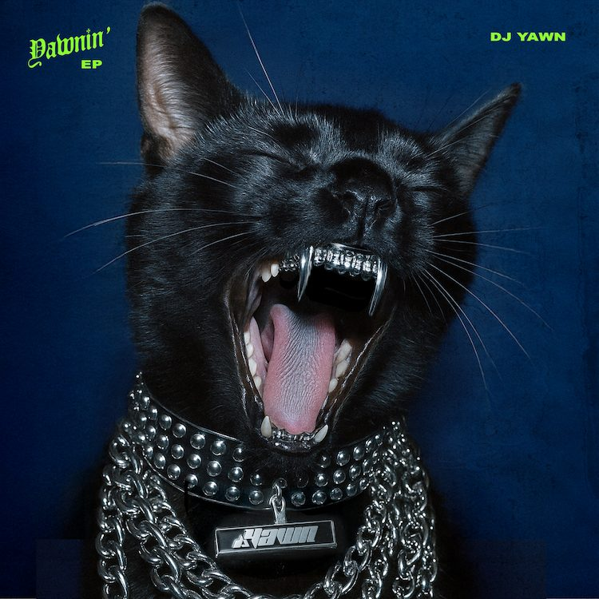

Coming up
Nailz - single, October 16, 2026. Yawnin' EP - out in full October 23, 2026.
About
DJ YAWN is Jan Orsag, a Czech-born DJ and producer based in Vancouver. His sets move through bass music, dub and club records, depending on the room.
He made The Muse (2023) with ill.Gates, featuring PAV4N, Who Knew, Nurries and ILL G8z. His singles CzechOne Two and Temperature came out on Somastate Records, and his Yawnin' EP lands in October 2026.
He holds residencies at Guilt & Co, Lobby Lounge and Karma Lounge in Vancouver, and has played The Chillage at Shambhala's Village Stage and Canada House during SXSW.
Short bio
Jan Orsag, aka DJ YAWN. Vancouver DJ and producer. Bass music, dub and club records. The Muse with ill.Gates, singles on Somastate, Shambhala's Village Stage, residencies at Guilt & Co, Lobby Lounge and Karma Lounge.
Watch


Mixes
Live at Shambhala 2025Deep dub and dubstep from the Village Stage.
Rooftop setVancouver, September 2024.
More on Mixcloud and SoundCloud.
Releases

 TemperatureSingle, Somastate Records, 2026.
TemperatureSingle, Somastate Records, 2026.
 CzechOne TwoSingle, Somastate Records, 2025.
CzechOne TwoSingle, Somastate Records, 2025.
 The MuseEP with ill.Gates, Producer Dojo, 2023.
The MuseEP with ill.Gates, Producer Dojo, 2023.
Also: Somebody feat. ILL G8z, with ill.Gates (Producer Dojo, 2023). Goon, DJ YAWN remix (Producer Dojo, 2022).
Selected shows
- Shambhala Music Festival 2025The Chillage, Village Stage. Salmo, BC.
- Canada House during SXSW 2024Austin, TX.
- Bia Boro SessionsVancouver, 2024.
- FIFA World Cup 2026 fan zoneVancouver.
- ResidenciesGuilt & Co, Lobby Lounge and Karma Lounge. Vancouver.
Photos


Press photos and logos for promo use.
Tech rider
- 2 x Pioneer CDJ-2000/3000 or similar
- Pioneer DJM-900 mixer (4-channel preferred)
- 1 booth monitor
- Table or booth with power
Set length: 60 to 90 minutes is ideal. 45 minutes to 2 hours works. Brings his own backups.
Contact
+1 778-688-0237 · Vancouver, BC